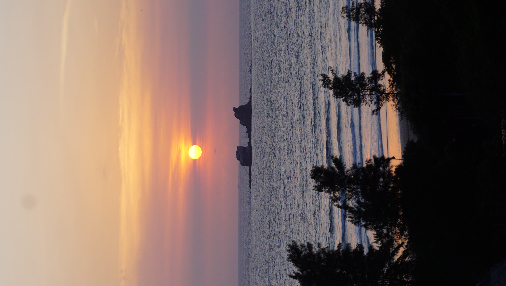

Avistamiento de Ballenas Cerca de Ayampe – Temporada y Tours
Cada año, las majestuosas ballenas jorobadas eligen las cálidas aguas de la costa ecuatoriana para reproducirse y criar a sus crías. Ayampe, aunque pequeño, es el punto de partida perfecto para esta increíble aventura marina.
1. La temporada de avistamiento
La temporada oficial de avistamiento de ballenas en Ecuador va desde principios de junio hasta finales de septiembre. Durante estos meses, miles de ballenas jorobadas migran desde las frías aguas de la Antártida hasta las costas de Manabí.
2. Tours desde Puerto López
La mayoría de los tours parten desde Puerto López, un pueblo pesquero a solo 20 minutos al sur de Ayampe. Las empresas locales ofrecen excursiones seguras y guiadas por expertos, quienes también suelen incluir visitas a la Isla de la Plata, conocida como la "Galápagos de los pobres" por su biodiversidad.
3. Una experiencia inolvidable
Observar a las ballenas jorobadas saltar, jugar y exhibir sus enormes colas es una experiencia verdaderamente conmovedora. Es una actividad ideal para toda la familia y una oportunidad única para conectar con la vida marina en su hábitat natural.
4. Consejos para tu aventura
Se recomienda reservar tours con anticipación, especialmente en temporada alta. Lleva protector solar, gorra, cámara y un impermeable ligero. Si eres propenso al mareo, considera tomar medicación preventiva.